The Bridge Studio
The studio turns the notes from a Friday open-office session into a finished podcast episode with a script, AI voices, on-screen visuals, an interactive web page and ready-to-post copy for each channel. Every screen is covered here with annotated screenshots. Use the search box at the top, or pick your role to hide what you won't need.
What's new
| When | What changed | Read more |
|---|---|---|
| 15 Oct 2026 | This guide. It also opens from User guide at the bottom of the studio's sidebar. | Keeping it current |
| Oct 2026 | Sign-in keeps working on a computer whose clock is wrong. A yellow notice tells you to fix the clock. | Sign-in problems |
| Oct 2026 | Script writing and chat edits with Claude work on long episodes. The "compiled grammar is too large" error no longer appears. | Notes |
| Oct 2026 | Brand guide import reads a web page (.html) or a zipped project folder, with its fonts and logo. | Import a brand guide |
| Oct 2026 | Admins add teammates with a temporary password, so nobody waits for an invitation email. | Team |
| Release 1 | The studio: notes to script, visuals, voices, review and export. | The studio at a glance |
Before you start
What one session turns into
A single Friday session gives the team a week of material. These are the files the Export tab produces, and the place each one usually goes.
| Output | Shape or format | Where it goes |
|---|---|---|
| Full episode video | MP4, 16:9 | YouTube, the website |
| Short clips | MP4, 9:16 or 1:1 | Reels, TikTok, Shorts, WhatsApp Status, LinkedIn, X |
| Podcast audio | MP3, plus a WAV master | Spotify, Apple Podcasts and other podcast apps |
| Interactive page | One .html file | The website, or sent as a file |
| Cover art | PNG | Podcast apps, newsletter, link previews |
| Captions and transcript | .srt, .vtt, .txt | YouTube and LinkedIn uploads, blog posts |
| Launch pack | Text you copy | Show notes, LinkedIn, WhatsApp broadcast, X, plus three suggested clips |
The rules the studio is built around
The Bridge sessions are not recorded, for confidentiality. People who ask questions on a Friday trust us with details about their business, so the episode never uses them. The AI replaces every attendee with a fictional listener who has a new name, industry, city and set of figures, and a person checks that work before anything goes out.
- Every episode says it uses AI voices. A badge sits on screen and the host reads a short disclosure, both set on the Brand page.
- A cloned voice needs the speaker's written consent, recorded on the Characters page.
- Tax figures come from the Tax facts library, which the script writer treats as the current law.
- Nothing goes out until a reviewer approves it. Until then every video and page carries a Draft watermark.
Roles
Everyone on the team has one of three roles. An admin sets it on the Team page. Pick your role in the Show me menu at the top of this guide to hide the parts you won't use.
| What you can do | Producer | Reviewer | Admin |
|---|---|---|---|
| Open episodes, read scripts, play previews, export files | Yes | Yes | Yes |
| Leave comments | Yes | Yes | Yes |
| Upload notes, write and edit scripts, use the chat | Yes | No | Yes |
| Generate voices, choose or clone voices | Yes | No | Yes |
| Change Brand, Characters, Pronunciation, Tax facts | Yes | No | Yes |
| Send for review, run a fact check, write the launch pack | Yes | No | Yes |
| Approve, mark as published | No | Yes | Yes |
| Add people, change roles, set passwords | No | No | Yes |
| Settings, AI and voice keys | No | No | Yes |
Signing in for the first time
- Open thebridge-studio.netlify.app in Chrome or Edge on a laptop or desktop.
- Type your work email and the temporary password your admin sent you, then press Sign in.
- Change the password straight away. Click your name at the bottom left of the sidebar, type a new password and press Set password.
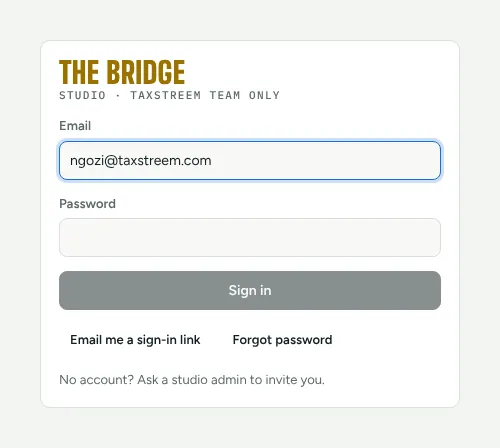
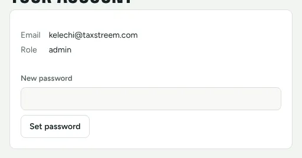
Email me a sign-in link and Forgot password only work once the team has switched on email sending. Until then, ask an admin to set a new password for you from the Team page. It takes them a few seconds.
If something odd appears at sign-in
"You're signed in, but not on the team yet"
Your email isn't on the Team page. Ask an admin to add the exact address you signed in with.
"This computer's clock is about an hour fast"
The studio works anyway, but fix the clock so other websites behave too. On a Mac, open System Settings, then General, then Date & Time, turn on Set time and date automatically and set the time zone to Lagos. On Windows, open Settings, then Time & language, then Date & time, and turn on both automatic settings. Press Hide to dismiss the notice.
"The studio couldn't load your account"
This usually means the connection dropped while the studio was starting. Press Try again. If it keeps happening, check your internet connection, then Sign out and sign in again.
Which computer and browser
Produce episodes in Chrome or Edge on a laptop or desktop. Video export runs on your own computer, so plug it in and keep the tab open while it works. Safari and Firefox can read and edit, but they save video as WebM, which most social apps reject. Reviewers can read, listen, comment and approve from a phone.
Quick start: your first practice episode
Work through these ten steps once with a practice episode and you will have touched every part of the studio. Your ticks are saved in this browser, so you can stop and come back. Generate voices for a handful of lines only, since every voiced character uses ElevenLabs credit, and delete the practice episode at the end.
The studio at a glance
The sidebar holds seven pages. Episodes is where the weekly work happens. The other six hold settings that every episode shares: the cast, how words are said, how the show looks and sounds, the tax figures, the team and the AI keys.
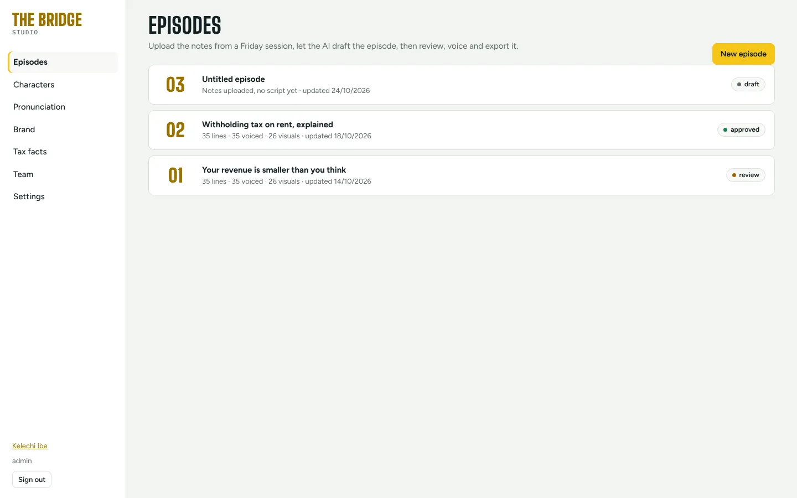
The four statuses
Every episode moves through the same four statuses, shown as a pill on the Episodes page and at the top of the episode.
Being written and edited. Exports carry the Draft watermark.
Waiting for a reviewer. Producers can still make changes.
A reviewer signed off on this exact script. The watermark goes away.
Out in the world. Marking it keeps the team's records straight.
Approval belongs to the script as it stood when the reviewer approved it. If anyone changes a line afterwards, the episode drops back to review and the watermark returns.
Inside an episode
An episode has six tabs that follow the order of the work: Notes, Script, Visuals, Voices, Review and Export. The other tabs open once a script exists. The number beside Review counts the checks still open. Changes save on their own, and the word Saved beside the status pill confirms it. Episode settings at the top right changes the episode number or deletes the episode, and ← All episodes takes you back to the list.
The studio saves the whole episode each time. Two people typing in the same episode at once can overwrite each other, so agree who holds the pen. Reviewers can comment at any time without that risk.
Notes
Every episode starts with the notes from a Friday session. The AI reads them, picks the strongest questions and writes a script with a host, the tax expert and fictional listeners.
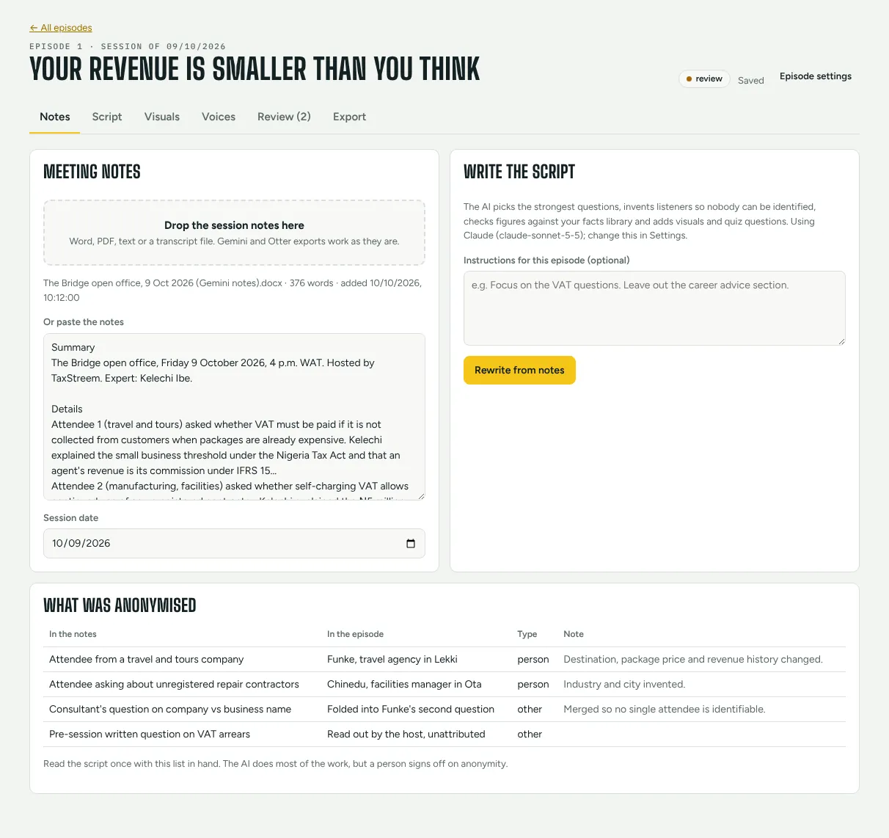
Writing the script
- On the Episodes page press New episode. It gets the next number.
- Drop the notes file onto Drop the session notes here. Word, PDF, plain text, Markdown and transcript files (.vtt, .srt) all work, and so do exports from Gemini and Otter. You can paste the text into Or paste the notes instead.
- Set the Session date. It shows in the episode header.
- Add Instructions for this episode if you want something specific. The AI always follows the house style set in Settings; these instructions add to it for this episode only.
- Press Write the script. It usually takes a few minutes. Keep the tab open until the message "Script ready" appears.
Some instructions that work well. Press Copy and paste one into the box.
Focus on the VAT questions. Leave out the career advice section.
Keep it under eight minutes and open with the question about the ₦5 million penalty.
Explain IFRS 15 in plain words for someone who has never heard of it.
Add one quiz question at the end of each part.
Make one of the listeners a woman who runs a logistics business in Aba.
The "What was anonymised" table
Under the two panels, the studio lists every person or detail it changed. The left column shows what the notes said and the right column shows what the episode uses instead. Read the script once with this list beside you. The AI does most of the work, but a person signs off on anonymity, every time.
Rewriting or starting blank
Once a script exists the button reads Rewrite from notes. It writes a fresh script from the notes and replaces the current one. The studio saves a version first, so you can bring the old script back from Review, under Versions. Start a blank script lets you write an episode by hand.
Notes that record each question, the expert's answer and any figure quoted make the best episodes. Real names can stay in the notes because the AI removes them, but never post the raw notes in a shared channel.
Script
The Script tab is the episode, line by line. Visuals, voices and every export are built from it, so time spent here pays off everywhere else.
The top panel
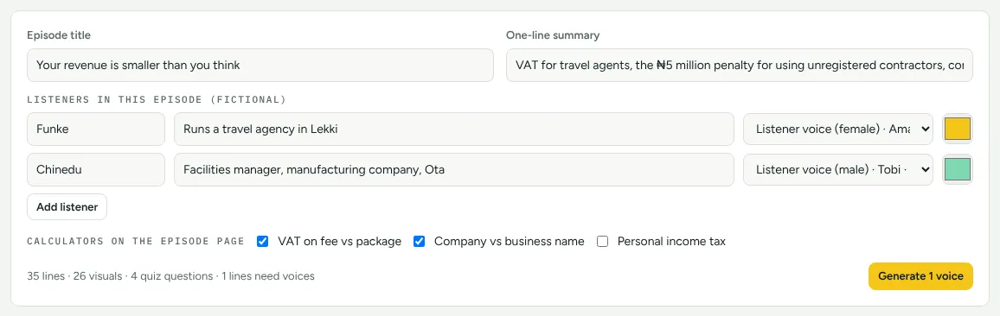
The Episode title and One-line summary appear on the cover, the interactive page and the launch pack. Listeners in this episode (fictional) lists the people the AI invented, each with a short description and a male or female listener voice; Add listener creates another. Calculators on the episode page picks which tools appear on the interactive page: VAT on fee vs package, Company vs business name, and Personal income tax. The button at the right voices every new or changed line in one go.
Anatomy of a line
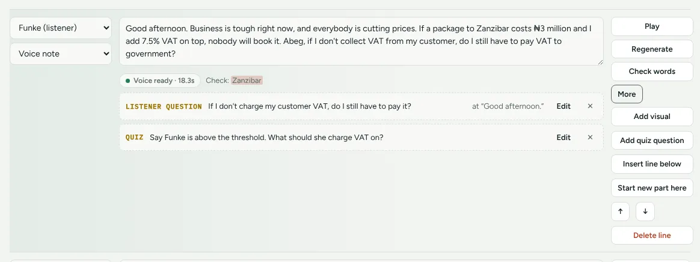
Click into the text to edit it. The second menu sets how the line is delivered:
- Studio is the host or the expert talking in the studio.
- Voice note is a listener's recorded question. A short message sound plays before it.
- Written question is a question sent in writing, which the host reads out.
The pill under the text shows where the voice stands.
| Pill | Meaning | What to do |
|---|---|---|
| No voice yet | The line has never been voiced. | Press Generate voice, or generate all lines from the top panel. |
| Generating… | ElevenLabs is making the audio. | Wait a few seconds. |
| Out of date | Something changed since the line was voiced: the words, the speaker's voice or its sliders, a pronunciation, or the voice model. | Press Regenerate. |
| Voice ready · 18.3s | Voiced and current. The number is the length. | Press Play to hear it. |
Check words plays the audio to a speech-to-text model and compares what it heard with the script. Any word it missed appears next to Check: in red. Play the line; if the voice skipped or garbled the word, add it to the pronunciation library or reword the line, then regenerate. A foreign place name sometimes trips the checker even when the voice said it well, so trust your ears.
More opens the line's tools: Add visual, Add quiz question, Insert line below, Start new part here, the arrows that move a line up or down, and Delete line.
Visual cards
A card is a graphic that appears on screen while a line plays. The script writer adds cards on its own, and you can add, change or remove them. There are twelve types.
| Card | Use it for | Example |
|---|---|---|
| Big figure | One number that matters | ₦300,000 · Revenue on a ₦3m package |
| Key point | A rule or takeaway in one sentence | An agent's revenue is its commission |
| Before → after | A change from one state to another | VAT on the package → VAT on the commission |
| Share of a total | A part of a whole | ₦300k commission out of a ₦3m package |
| Comparison bars | Two to four amounts side by side | Tax as a company against tax as a business name |
| Formula | How a figure is worked out | VAT = 7.5% × commission |
| Numbered steps | A process in order | How to register for VAT |
| List | Items with no order | Records to keep for an audit |
| Legal / not legal | What the law allows and what it doesn't | Charging VAT you never remit |
| Listener question | Puts the question on screen as it is asked | If I don't charge my customer VAT, do I still have to pay it? |
| Call to action | Where to go next | Join The Bridge on Friday at 4 p.m. |
| Image | A picture you upload | A screenshot of a form |
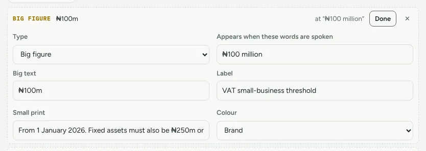
Appears when these words are spoken controls timing. The card shows up as the voice reaches those words, so pick the words that introduce the idea. The colour setting picks between Brand, Positive, Neutral and Warning; save Warning for penalties and risks so it keeps its force.
One card per idea. If two cards land within a few seconds of each other, the preview shows them crowding, and viewers on a phone read neither.
Quiz questions
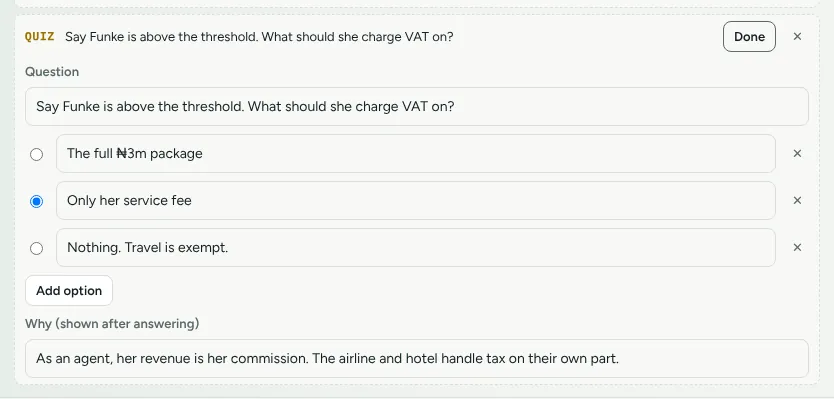
Quiz questions only appear on the interactive page. When playback reaches the line, the episode pauses and asks the question. The listener picks an answer, sees whether it was right along with your Why text, and carries on. Up to four options are allowed. Pick the right one with the round button next to it.
Parts and music
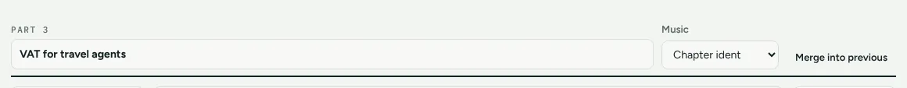
Episodes are split into parts. Start new part here in a line's More menu begins one. The part title shows on screen (for example "Part 2 · VAT for travel agents"), in the chapter list on the interactive page and in the show notes. The music menu plays a cue as the part opens: Intro sting + bed for the opening, Chapter ident between parts and Outro music for the close. The cues themselves are set on the Brand page. Merge into previous removes the break.
Checks and notes from the AI
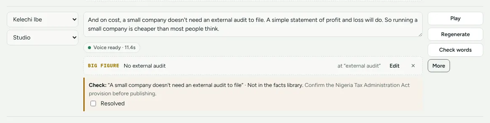
The script writer and the fact check leave items under lines. Check: needs a decision, for instance a figure that differed from Tax facts. Note: is for information. Read each one, fix the line if needed and tick Resolved. The count on the Review tab drops as you go.
Visuals
The Visuals tab is a live preview of the video with a chat beside it. You describe a change in plain words and the AI makes it in the script and on screen.
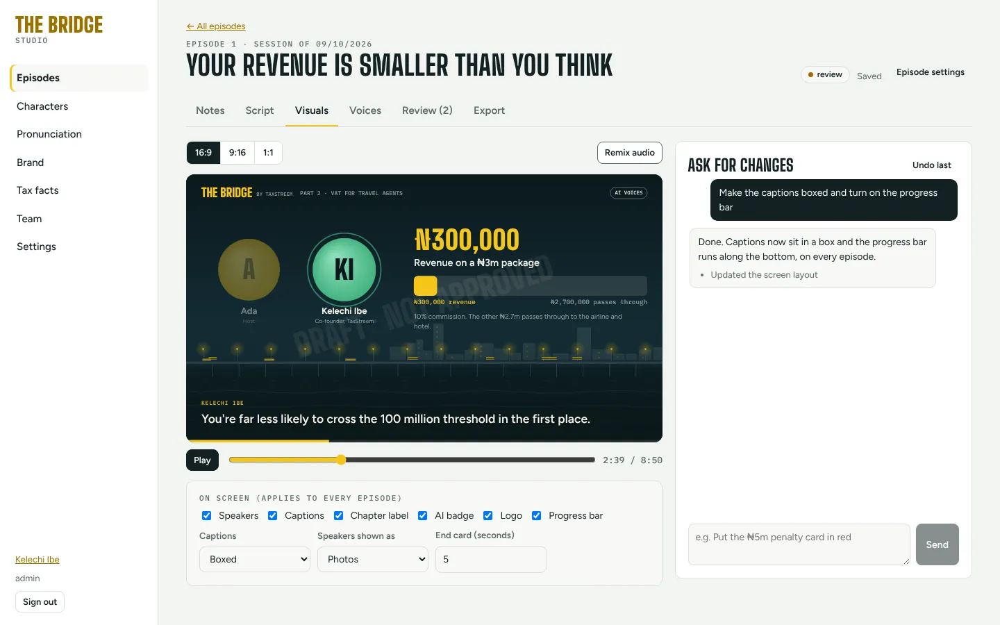
The preview
The three buttons above the preview switch between 16:9, 9:16 and 1:1. Before any line is voiced, the preview runs silently with estimated timing. Once lines have voices, press Load audio to mix them with the music, then Play and drag the slider to move around. After changing lines or regenerating voices, press Remix audio to hear the new version. The button reads Preparing… for a moment while the preview builds.
Asking for changes
Type what you want in the box and press Send (or Enter). The AI replies with what it did, followed by a list of the changes. Anything it could not do appears as Skipped: with the reason. Undo last reverses the most recent chat change, and you can press it more than once.
The chat can rewrite, add or delete lines. It can add, change or remove visual cards and quiz questions, rename parts and set their music, change brand colours, switch on-screen elements on or off, edit the end card and rename the fictional listeners.
Make the captions boxed and turn on the progress bar
Add a steps card when Kelechi explains how to register
Shorten Funke's first voice note to two sentences
Put the ₦5m penalty card in the warning colour
Add a quiz question at the end of part 2 about who pays VAT on the commission
Rename part 2 to "What travel agents owe"
Change the end card headline to "Bring your question on Friday"
Brand colours, the on-screen layout and the end card belong to the whole show. A chat change to any of them shows up in every episode, old ones included.
On screen
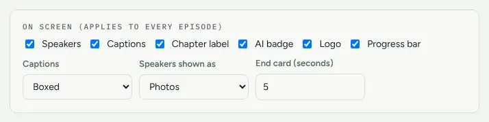
The checkboxes switch elements on or off: Speakers, Captions, Chapter label, AI badge, Logo and Progress bar. Captions chooses Word by word (each word lights up as it is spoken), Plain or Boxed. Speakers shown as picks photos or initials. End card (seconds) sets how long the closing card stays up.
Keep the AI badge switched on. It is part of how we tell the audience the voices are AI.
Check each shape
Titles and cards wrap differently in portrait. Before exporting a 9:16 clip, switch the preview to 9:16 and scrub through it.
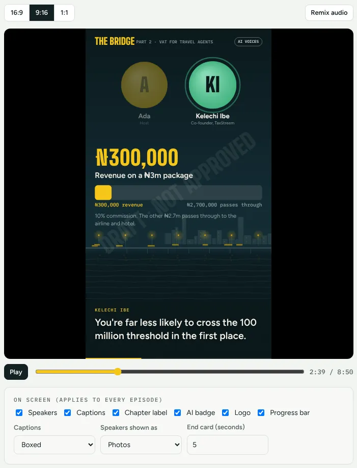
Voices
The Voices tab voices the whole episode at once and shows what it will cost.
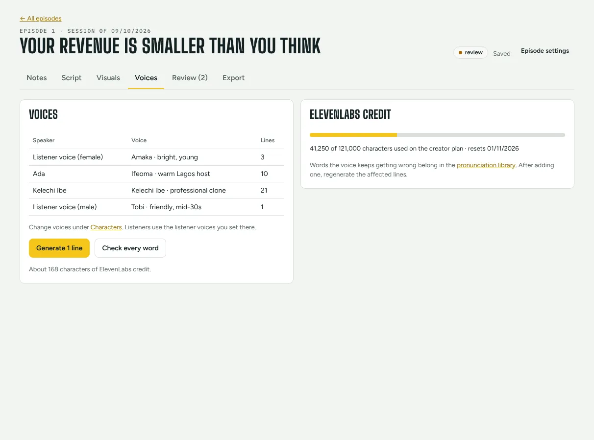
The cast table lists each speaker, the voice they use and how many lines they have. A speaker whose voice reads No voice chosen in orange needs one picked on the Characters page first. Generate N lines voices every line that is new or out of date, and the estimate below it shows roughly how many ElevenLabs characters that uses. When everything is current the button reads All voices are up to date.
Check every word runs the listen-back check over every voiced line, then tells you how many lines to look at in the Script tab. Run it once per episode before sending it for review.
Spending credit wisely
ElevenLabs charges by the character, roughly one credit for each letter, space and punctuation mark on most models. The panel on the right shows this month's use and the reset date.
- Settle the wording and the pronunciation library before generating, since every change after that means paying for the line again.
- Regenerate single lines from the Script tab when only a few have changed.
- Moving a character's sliders, or changing the voice model in Settings, marks lines out of date in every episode. Make those changes between episodes, on purpose.
Review
The Review tab is where an episode gets its sign-off. It also holds the fact check, the comments and the version history.
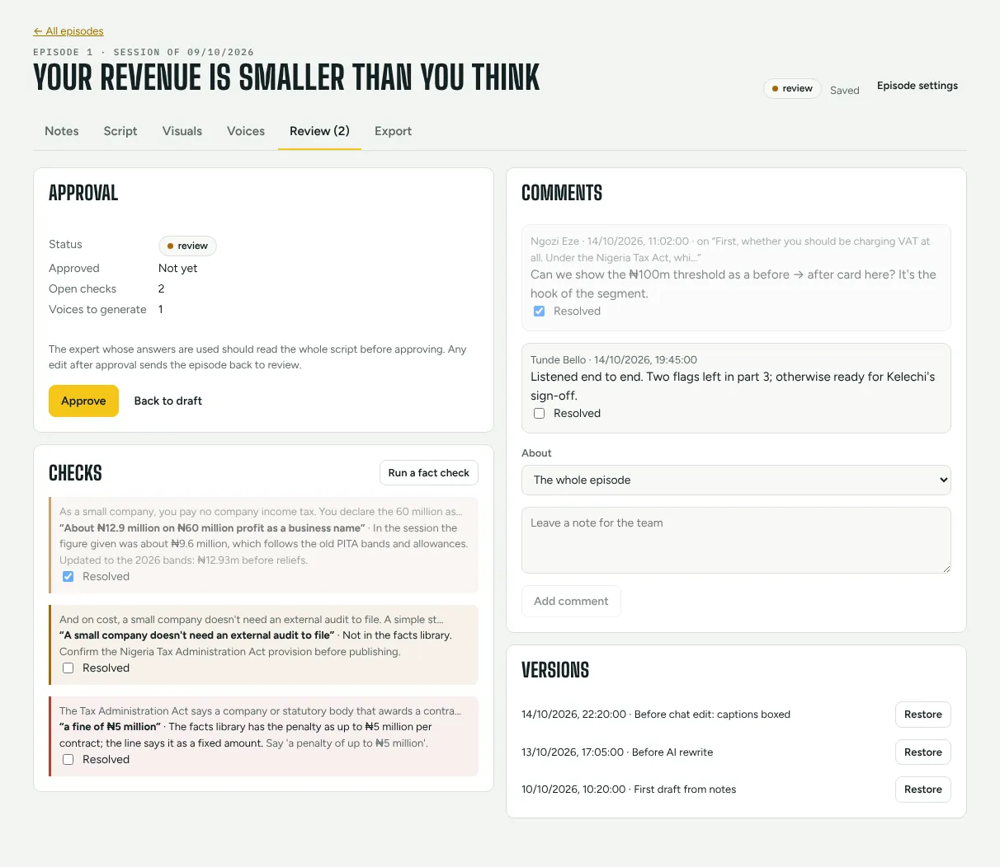
Approval
The panel shows the status, who approved and when, how many checks are open and how many lines still need voices. The buttons change with the status:
- Send for review moves a draft to review. Producers and admins.
- Approve signs off the current script and removes the watermark from exports. Reviewers and admins. If checks are open or lines lack voices, the studio asks you to confirm first.
- Mark as published records that the episode is out. Reviewers and admins.
- Back to draft reopens the episode for big changes.
Fact check
Run a fact check sends the script to the AI with the Tax facts library and adds an item under any claim that doesn't match. Run it after the last big edit, then resolve each item in the Script tab.
Comments
Pick a line in the About menu, or The whole episode, type a note and press Add comment. Name the change you want ("say 7.5% instead of 7 and a half percent") so the producer can act without a meeting.
Versions
The studio saves a version before every AI rewrite, approval and restore. Restore brings one back. The current script is saved as a version first, and the episode returns to draft.
Reviewing on a phone
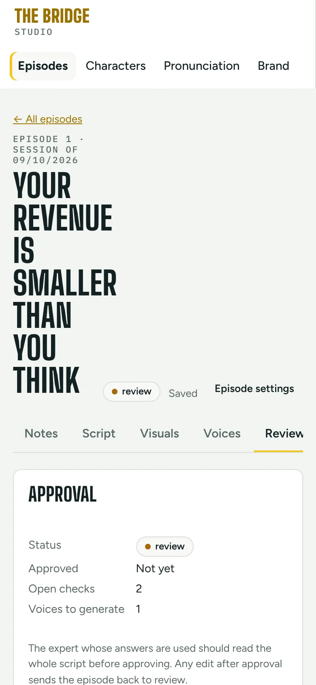
- The anonymised table on the Notes tab covers everyone in the notes, and no real detail survives in the script.
- Every figure matches Tax facts. Run the fact check if nobody has.
- The Review tab shows no open checks.
- You listened to the whole episode once in the Visuals tab, with audio loaded.
- The shapes the team plans to post look right, especially 9:16.
Export
The Export tab turns the episode into files. The banner at the top warns you if the episode isn't approved yet (videos and pages then carry the Draft watermark) or if any line has no current voice (it would be silent).
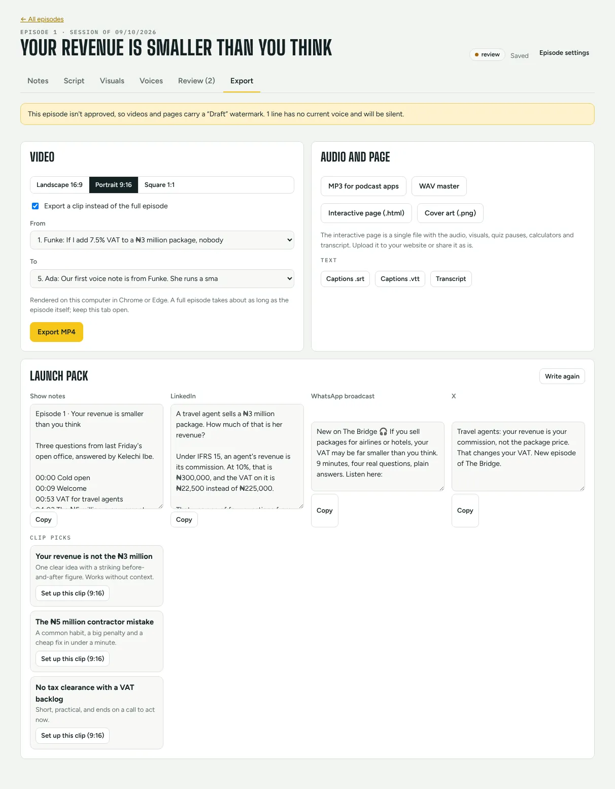
Video
Pick Landscape 16:9, Portrait 9:16 or Square 1:1. Tick Export a clip instead of the full episode and choose the first and last line to make a short clip. For a full episode, Add the intro and outro video puts the bookend videos from the Brand page on either side. Press Export MP4.
The video renders on your computer and a full episode takes about as long as the episode itself. A progress bar shows how far it has got and Cancel stops it. Keep the tab open and the laptop plugged in. Chrome and Edge make MP4; other browsers fall back to WebM.
Audio and page
- MP3 for podcast apps is the file to upload to the podcast host.
- WAV master is full quality, for archiving or for an editor.
- Interactive page (.html) is one file holding the audio, visuals, quiz pauses, calculators and transcript. Upload it to the website or send it as it is.
- Cover art (.png) is a square cover with the episode title.
Text
Captions .srt suits YouTube and LinkedIn uploads. Captions .vtt suits web players. Transcript is plain text with speaker names, useful for a blog post or for search engines.
Launch pack
Write show notes, posts and clip picks asks the AI for show notes with chapters, a LinkedIn post, a WhatsApp broadcast, a short post for X and the three best moments for vertical clips. Every box is editable and has its own Copy button. Write again asks for a fresh set.
Each clip pick has a title and a reason. Set up this clip (9:16) fills in the clip range, switches the shape to portrait and scrolls back up to the video settings. Press Export MP4 from there.
The launch pack is a first draft. Read it in the voice of the channel: LinkedIn wants a point of view in the first line, WhatsApp wants it short with the link at the end.
What the exports look like
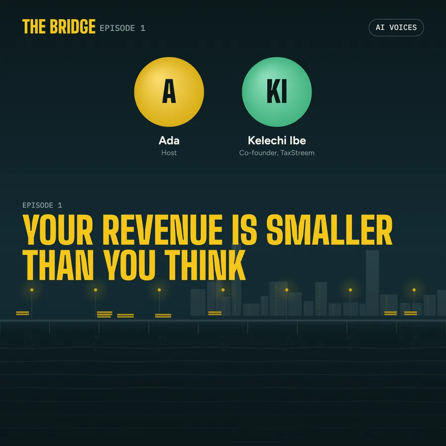
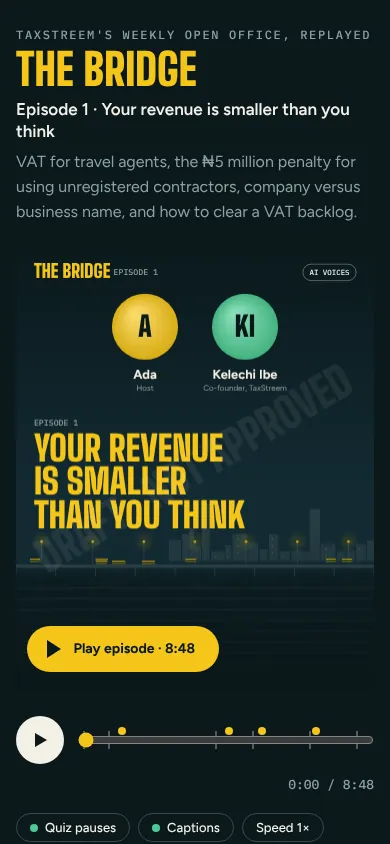
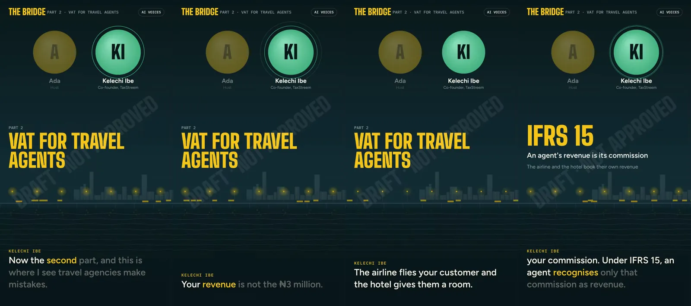
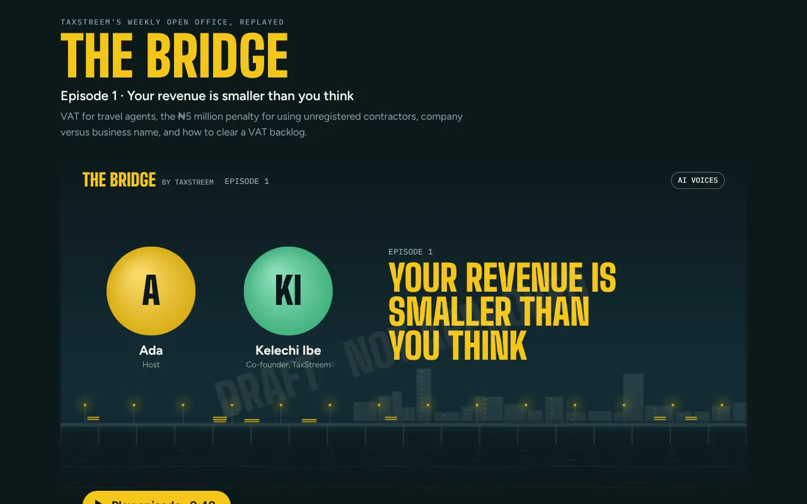
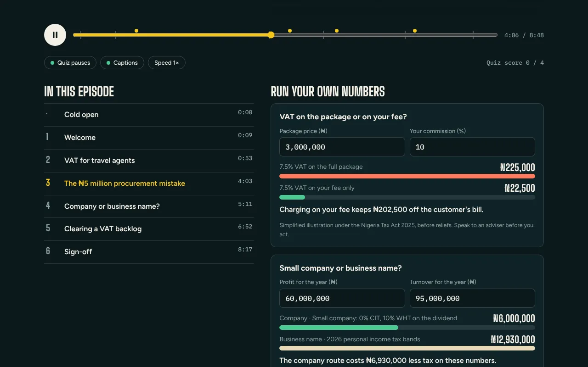
On the interactive page a listener can jump between parts from In this episode, answer quiz questions when playback pauses (or press Skip and keep listening), change the speed, try the calculators and read the transcript, where tapping any line plays it.
Characters
Characters are the voices of the show. Hosts and tax experts appear on screen with a photo or initials. Listener voices speak for the fictional listeners each script invents, and the AI picks a male or female listener voice for each one.
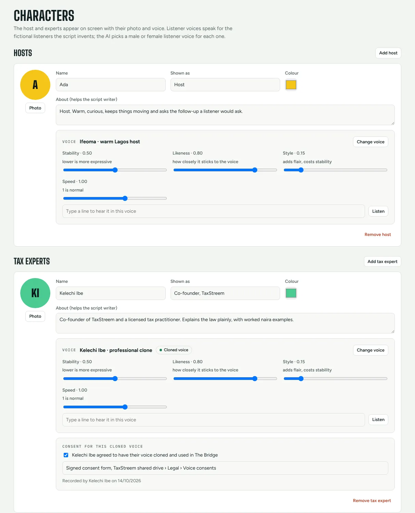
What each field does
- Photo replaces the initials on screen. Use a square, well-lit head and shoulders.
- Name and Shown as appear under the speaker on screen, for example "Kelechi Ibe" and "Co-founder, TaxStreem".
- Colour fills the circle behind the initials when there's no photo.
- About (helps the script writer) tells the AI who this person is and how they talk. A line such as "Explains with Lagos market examples, never uses jargon without defining it" changes the script for the better.
- Voice opens the voice picker with Choose a voice or Change voice.
Tuning a voice
Four sliders change how the voice performs. Type a sentence in the box underneath and press Listen to hear the result before generating a whole episode.
| Slider | Lower | Higher | Studio default |
|---|---|---|---|
| Stability | More expressive, can wander | Steadier, can sound flat | 0.50 |
| Likeness | Freer interpretation | Sticks closely to the original voice | 0.80 |
| Style | Neutral delivery | More flair, less stable | 0.15 |
| Speed | Slower (0.7) | Faster (1.2) | 1.00 |
For dense tax explanations, try a speed of 0.95. If a voice sounds flat, lower Stability by 0.05 at a time and listen again.
Moving a slider marks every line this character speaks, in every episode, as out of date. Tune voices before a run of episodes, never the day before publishing.
Choosing a voice
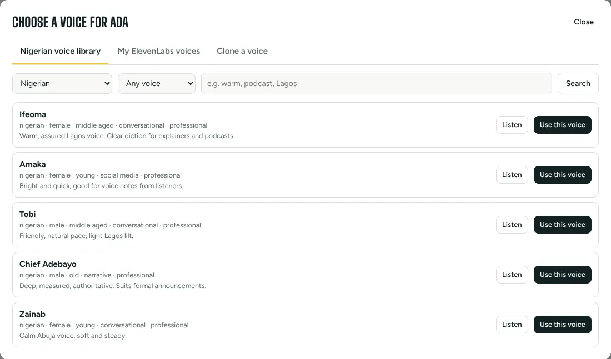
The picker has three tabs. Nigerian voice library searches the ElevenLabs shared library. Filter by accent (Nigerian, African, Ghanaian or any) and by voice, and search by feel with words like warm, podcast or Lagos. Press Listen to hear a sample and Use this voice to give it to the character. My ElevenLabs voices lists voices already in the team's ElevenLabs account, including professional clones. Clone a voice makes a new one.
Cloning a voice
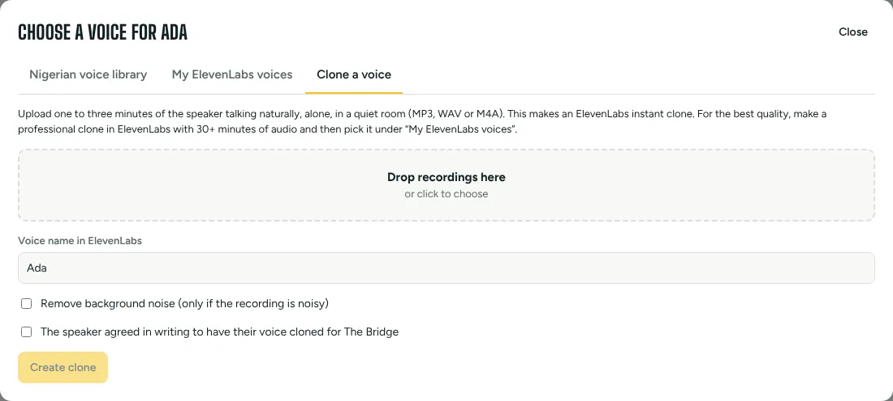
- Record one to three minutes of the person talking naturally, alone, in a quiet room. MP3, WAV and M4A all work.
- Drop the recordings in, check the name and tick Remove background noise only if the recording is noisy.
- Tick The speaker agreed in writing to have their voice cloned for The Bridge, then press Create clone. ElevenLabs sometimes asks the speaker to verify the clone before it can be used.
- Back on the character, tick the consent box under the voice and type where the written consent is kept.
This makes an instant clone. For the best quality, make a professional clone in ElevenLabs with 30 minutes or more of audio and pick it under My ElevenLabs voices.
Never clone a voice without the speaker's written consent, and never clone an attendee of The Bridge.
Pronunciation
The pronunciation library teaches the voices how to say acronyms, names and brands. Captions keep the written form and only the voice hears the "say as" version. Naira amounts such as ₦3m are read as "3 million naira" without any entry.
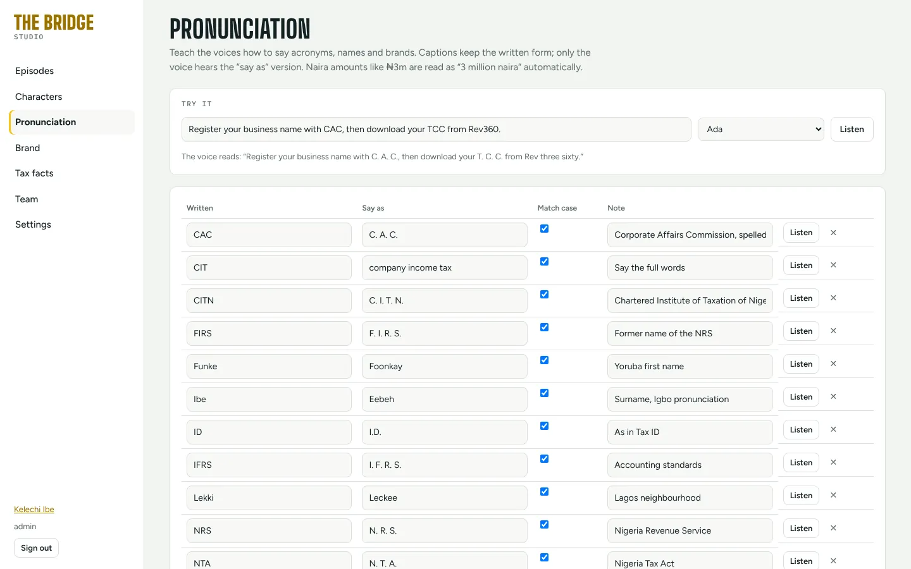
Each row has the word as Written, how to Say as, a Match case tick (so "CAC" changes but "cac" in a web address doesn't) and a Note for the team. Spell the "say as" the way it sounds: "C A C" with spaces reads the letters, "Tax Stream" fixes the brand name, "Lek-key" helps with Lekki.
A CSV file for Import CSV needs a header row and four columns: term,say_as,match_case,note, with yes or no in the third. Export CSV saves the current list in the same layout, which is the easiest way to edit many words at once in Excel or Google Sheets.
Adding a word marks every line that contains it as out of date. Add words as soon as you hear a mistake, then regenerate only those lines.
Tax facts
The script writer treats this list as the current law. If an expert's answer in the notes disagrees with it, the script uses the figure here and leaves a check for the expert. The fact check uses it too.
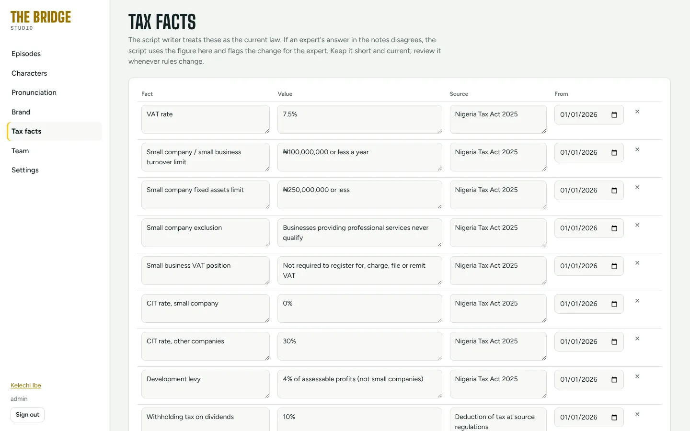
Keep it short and current. When a rule changes, update the fact here before the next episode is written and note the source, so a reviewer can check it. Ask the tax team to read the list once a quarter.
Brand
The Brand page decides how The Bridge looks and sounds in every episode, video and page. Changes show in the preview straight away and save on their own. The preview is silent, with estimated timing.
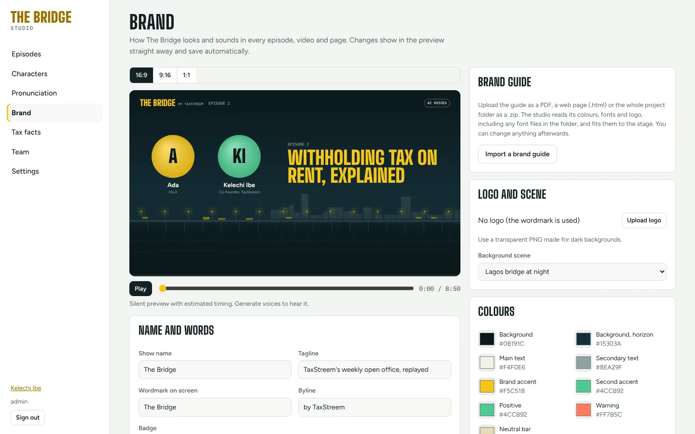
Import a brand guide New
Press Import a brand guide and choose a PDF brand book, a web page (.html) or a whole project folder zipped into one .zip file. The studio reads the colours, fonts and logo, including any font files inside the folder, and fits them to the stage. A summary then lists what changed.
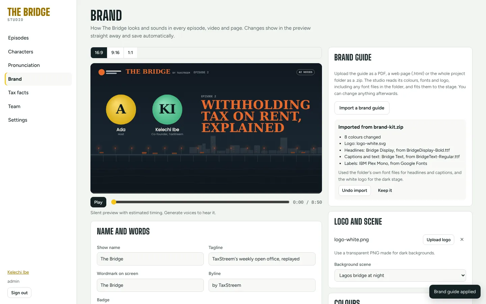
Zip the whole folder of a web brand kit, fonts and images included, rather than sending the .html file alone. The import can then use the real font files and logo.
Logo and scene
Upload logo takes a transparent PNG made for dark backgrounds; SVG files are converted for you. Without a logo, the wordmark text is used. Background scene sets what sits behind the speakers: Lagos bridge at night, Soft gradient, Grid, My image or Plain colour.
Name and words
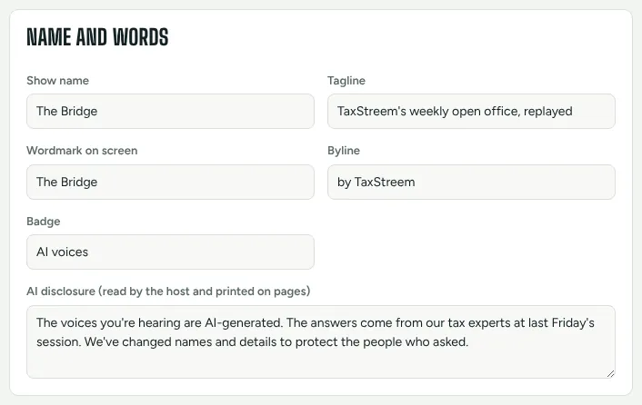
Show name and Tagline head the interactive page. Wordmark on screen and Byline sit at the top left of the video; the byline shows in 16:9 only. Badge is the text in the AI badge. AI disclosure is the sentence the host reads and the pages print, so keep it plain and keep it in.
End card
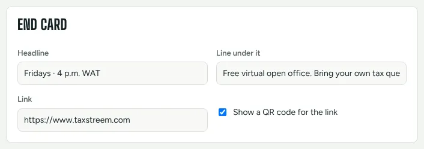
Set a Headline, a Line under it and a Link. Show a QR code for the link adds a code viewers can scan from a TV or laptop screen. Change the link when a campaign needs a tracked URL.
Colours and fonts
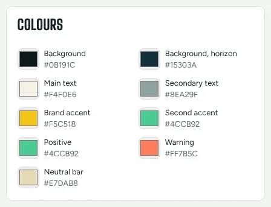
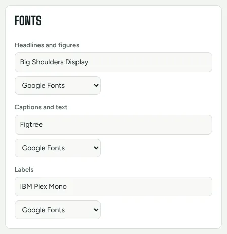
The colour swatches cover the background, the horizon, main and secondary text, the brand accent, a second accent, and the Positive, Warning and Neutral colours used by cards. For fonts, choose Google Fonts and type the family name, or Uploaded file for a font you own. Installed on the computer only works on machines that have the font, so avoid it when several people export.
Music and sounds
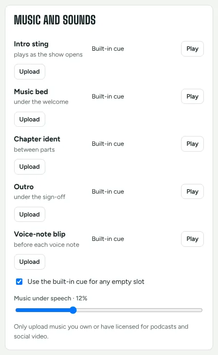
There are four slots: Intro sting plays as the show opens, Music bed runs under the welcome, Chapter ident plays between parts and Outro runs under the sign-off. Press Play to hear a cue or upload your own. Use the built-in cue for any empty slot fills gaps with the studio's own music. Music under speech sets how loud music sits beneath the voices; keep it low enough that a phone speaker still carries every word.
Only upload music you own or have licensed for podcasts and social video. Platforms mute or remove videos with unlicensed music.
Intro and outro videos
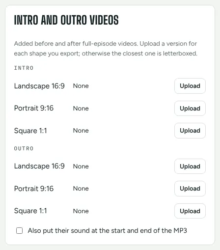
Upload a short branded video for each shape you use. They are added on export when Add the intro and outro video is ticked. Also put their sound at the start and end of the MP3 carries their audio into the podcast file.
Team
Only people listed here can use the studio. Admins add people, change roles and reset passwords.
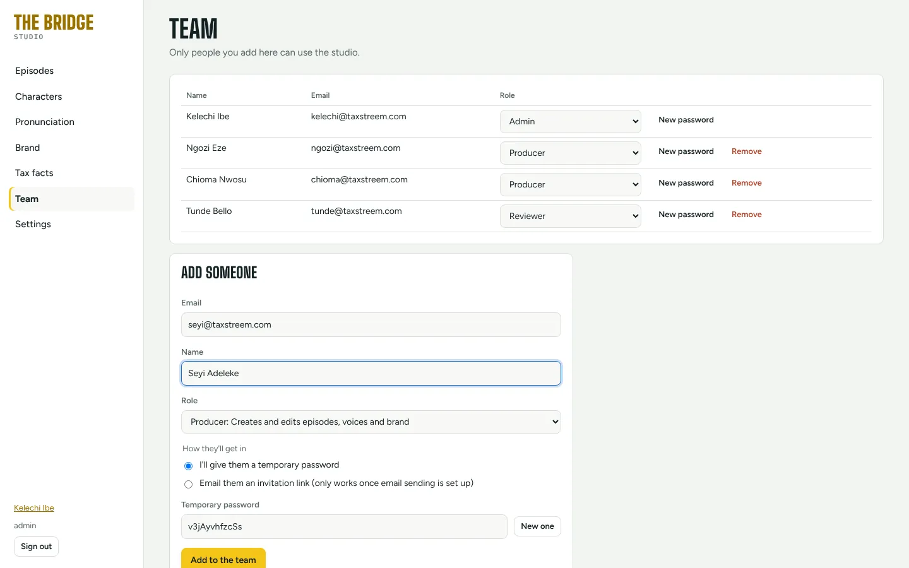
Adding someone
- Type their work email and name, and pick a role.
- Under How they'll get in, keep I'll give them a temporary password. The studio suggests a strong one. The invitation-link option only works once email sending is set up.
- Press Add to the team. A box appears with the address and password; press Copy.
- Send them the details in a direct message, with the studio link, and ask them to change the password after signing in.
When someone forgets their password
Press Set password on their row. The studio suggests a new password; press Set this password, then Copy it and send it to them privately. Their old password stops working straight away. Change a role with the menu on their row, and press Remove when someone leaves.
Send passwords in a direct message, never in a group chat or a shared document.
Settings
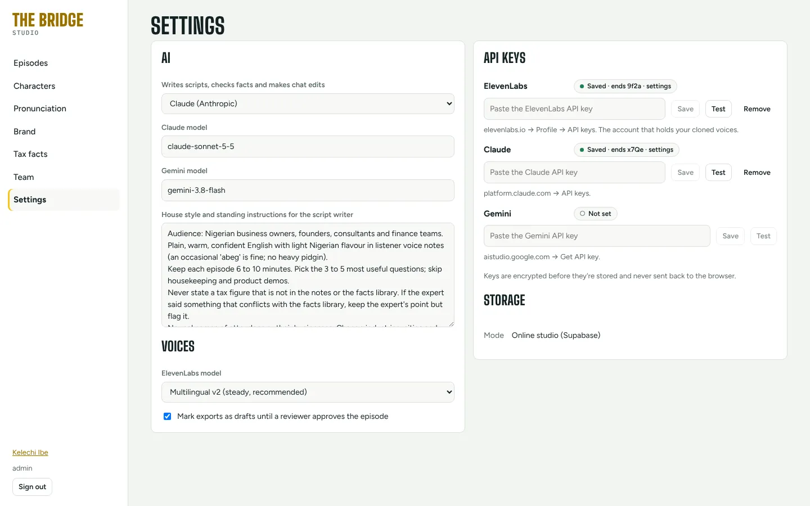
- AI provider chooses Claude (Anthropic) or Gemini (Google) to write scripts, run fact checks and answer the chat, with the model name for each.
- House style and standing instructions for the script writer applies to every script. Put the show's tone, banned phrases and recurring segments here, and keep one-off requests in the episode's own instructions box.
- Voices picks the ElevenLabs model: Multilingual v2 (steady, recommended), Eleven v4 (newest, long-form), Eleven v3 (most expressive) or Flash v2.5 (fast, cheaper).
- Mark exports as drafts until a reviewer approves adds the Draft watermark to anything unapproved. Leave it on.
- API keys holds the AI and ElevenLabs keys. Keys are encrypted before they're stored and never sent back to the browser. Test checks that a key works.
Changing the voice model marks every line in every episode as out of date, and stale lines are silent in exports until regenerated. Test a new model on one practice episode first.
Marketing playbook
The studio makes the files. This section is about turning one Friday session into a week of posts without cutting corners on review.
A weekly rhythm
- FridayThe Bridge session runs. Whoever took notes shares them with the producer privately.
- Friday evening or Monday morningThe producer creates the episode and writes the script, then reads the anonymised table.
- MondayEdit the script and visuals, resolve the checks, generate voices and run Check every word. Send for review.
- TuesdayThe reviewer listens, comments and approves. The producer fixes anything raised.
- WednesdayExport the full episode, MP3, interactive page and the three clip picks. Write the launch pack and publish the long forms.
- Thursday to the next FridayRelease one clip a day on social channels, each pointing to the full episode, and invite people to the next session.
Which export goes where
| Channel | Export | Copy | Notes |
|---|---|---|---|
| YouTube | Full episode, 16:9, intro and outro on | Show notes as the description | Upload Captions .srt. Use the cover art as the thumbnail starting point. |
| Podcast apps | MP3 for podcast apps, cover art | Show notes | Upload through the podcast host. Chapters are already in the show notes. |
| Website | Interactive page (.html) | Show notes, transcript | The transcript helps search engines find the page. |
| 1:1 or 16:9 clip | LinkedIn post | Upload Captions .srt with the video. Many people watch with the sound off. | |
| Reels, TikTok, Shorts | 9:16 clip from a clip pick | Shorten the X post | Captions are already burned in. Keep clips under a minute. |
| 9:16 clip for Status, link to the page | WhatsApp broadcast | Send the broadcast once the page is live, so the link works. | |
| X | 1:1 or 16:9 clip | X post | Lead with the question the clip answers. |
| Newsletter | Cover art | Show notes, first paragraph | Link to the interactive page so readers can try the calculators. |
Getting better results from the AI
- Say where. "In part 2, after Kelechi explains the threshold" beats "somewhere in the middle".
- Name the card type you want ("a comparison bars card", "a steps card"), using the names in the card table.
- Ask for one change at a time when it matters, so Undo last undoes only that change.
- Say what to keep: "Shorten this line but keep the ₦3 million figure."
- For a large rewrite of one part, edit the lines in the Script tab yourself. It is faster than several rounds of chat.
- Recurring requests belong in the house style on the Settings page, so every script starts closer to what you want.
Before anything goes out
Tick through this list for each episode. Like the quick start, the ticks stay in this browser.
Lines we don't cross
- Real attendees never appear, by name, voice, business or detail.
- The audience always knows the voices are AI.
- Cloned voices belong to people who agreed in writing.
- Music is owned or licensed.
- The draft setting stays on, and nobody switches it off to get round an approval.
The 15-minute demo
Send this guide a day ahead and ask everyone to read Before you start. The demo then only has to show the flow; the guide covers the detail, and the quick start covers the practice.
- Pick a finished episode with voices, visuals and a launch pack. Writing a script live takes minutes, so show one that already exists.
- Open it in Chrome, go to the Visuals tab and press Load audio before people join.
- Download an exported clip and the interactive page beforehand, in case rendering live is slow.
- Keep this page open in a second tab with the timer below.
- 0:001 min
What the studio is
Show the six steps at the top of this guide, then the Episodes page in the studio.
"Every Friday session becomes a week of content. An episode moves through six tabs, left to right."
- 1:002 min
Notes and anonymity
Open the episode's Notes tab. Point at the notes, the instructions box and the "What was anonymised" table.
"Attendees never appear. The AI invents listeners, and one of us checks this table before anything goes out."
- 3:003 min
Script, cards and quiz
Script tab. Play one line, edit a word and show the pill change to Out of date. Open a card's Edit and the quiz. Show one Check under a line.
"You edit it like a document. Cards appear on the words you choose."
Short of time: skip the quiz.
- 6:002.5 min
Visuals and the chat
Visuals tab. Play twenty seconds. Send "Make the captions boxed and turn on the progress bar", watch the preview, press Undo last. Switch to 9:16.
"Ask in plain words. If you don't like it, undo."
- 8:301.5 min
Voices, cast and pronunciation
Voices tab: the cast table and the credit panel. Characters page: type a sentence and press Listen. Pronunciation page: Try it.
"Fix the words before you generate. Every regenerate costs credit."
Short of time: skip Pronunciation and point to its section here.
- 10:001.5 min
Review and approval
Review tab: the approval panel, one comment, Versions.
"Nothing goes out with a Draft watermark. A reviewer approves the exact script, and any later edit sends it back."
- 11:302.5 min
Export and the launch pack
Export tab: a clip pick and Set up this clip, then the launch pack Copy buttons. Open the downloaded interactive page and try a calculator.
"One episode gives us YouTube, podcast apps, the website and three clips."
- 14:001 min
Where to go next
Back to this guide: the Show me menu, the search box, the quick start and the playbook.
"Do the quick start this week with a practice episode. Questions go in the team channel."
Troubleshooting
The Script, Visuals and other tabs are greyed out
They open once the episode has a script. Go to Notes and press Write the script, or Start a blank script.
Writing the script failed or is taking a long time
The script is written in the background and long sessions can take several minutes. If the message says it is taking longer than expected, wait a few minutes and reload the page. An error that mentions a key or the AI provider means an admin should press Test next to the key in Settings.
The chat answered but nothing changed
Look for lines starting with Skipped:, which explain what the AI couldn't do. Ask again and name the part, the speaker or the card. For a large change, edit the line in the Script tab yourself.
Load audio is missing or greyed out
It appears once at least one line has a voice. While the preview builds it reads Preparing…; give it a moment.
A line sounds wrong
Press Check words on the line. A misread word belongs in the pronunciation library. A flat or odd delivery often improves if you reword the sentence, or lower the character's Stability a little. Then press Regenerate.
Lines say Out of date, but nobody touched them
Something they depend on changed: a pronunciation that appears in the line, the character's voice or sliders, or the voice model in Settings. Regenerate them before exporting, or those lines will be silent.
Part of the exported video or MP3 is silent
Those lines have no current voice. The banner on the Export tab says how many. Generate them from the Voices tab and export again.
The video has a Draft watermark
The episode isn't approved, or someone changed the script after approval and sent it back to review. Ask a reviewer to approve, then export again.
The video saved as WebM
The browser can't make MP4. Export again in Chrome or Edge.
The export is slow or stopped
A full episode takes about as long as the episode itself. Keep the tab open and in front, keep the laptop plugged in and stop it from sleeping. To test settings, export a short clip first.
ElevenLabs says we're out of credit
The Voices tab shows how much is used and when it resets. An admin can move the ElevenLabs plan up a tier, or the team can wait for the reset. Meanwhile, edit scripts and visuals; they don't use voice credit.
The brand import picked the wrong colours
Press Undo import, or keep it and click the swatches you want to change. A zipped folder with the real CSS gives a better result than a PDF.
I forgot my password
Ask an admin to press Set password on your row of the Team page. Then change it from your name at the bottom left.
Can I use the studio on my phone?
For reading, listening, commenting and approving, yes. Producing and exporting need a laptop or desktop with Chrome or Edge.
Where are the files kept?
Episodes, voices and uploads are stored in the team's online studio. Exports download to your computer, usually to the Downloads folder. Keep the final files in the team's shared drive.
Glossary
- Episode
- One Friday session turned into a show, with its own number, script and exports.
- Part
- A chapter of an episode with its own title, shown on screen and in the chapter list.
- Line
- One thing one speaker says. Each line has its own voice audio.
- Studio, voice note, written question
- The three ways a line is delivered: spoken in the studio, played as a listener's recording, or read out by the host.
- Listener
- A fictional person the AI invents to ask a real question from the session.
- Card
- A graphic that appears on screen during a line, such as a big figure or a list of steps.
- Cue words
- The words in a line that make its card appear.
- Quiz pause
- A question that stops playback on the interactive page until the listener answers or skips.
- Check
- An item under a line that needs a decision, left by the script writer or the fact check.
- Out of date
- A line whose voice no longer matches its words or settings, and needs regenerating.
- Listen-back check
- Check words and Check every word: the studio transcribes the audio and flags words the voice skipped.
- Credit
- ElevenLabs' unit of use, roughly one per character voiced.
- Instant clone
- A voice copied from one to three minutes of audio, made inside the studio.
- Professional clone
- A higher-quality copy made in ElevenLabs from 30 minutes or more of audio.
- Say as
- How the voice should pronounce a word, set in the pronunciation library.
- Tax facts
- The list of current figures and rules that scripts and fact checks rely on.
- Sting, bed, ident
- Short opening music, music under the welcome, and the short cue between parts.
- Music under speech
- How loud the music sits beneath the voices.
- Bookends
- The intro and outro videos added to a full-episode export.
- Draft watermark
- The diagonal "Draft" mark on anything exported before approval.
- Interactive page
- A single .html file with the episode, chapters, quiz pauses, calculators and transcript.
- Launch pack
- Show notes, posts for LinkedIn, WhatsApp and X, and three clip picks, written by the AI.
- Clip pick
- A moment the AI suggests for a short vertical video.
- House style
- Standing instructions in Settings that every script follows.
Check yourself
Try these after reading, or before the demo. Nothing is recorded.
Keeping this guide current
The guide is one HTML file that lives in the studio's code at public/guide/index.html, with its screenshots in public/guide/shots/. It is served at thebridge-studio.netlify.app/guide/, and the studio's sidebar links to it.
The easy way
Ask Claude in the thebridgepodcast project to "update the user guide for" the new feature. It edits the file, takes new screenshots with fictional data, adds a line to What's new and opens a pull request for you to merge.
By hand
- Each part of the guide is a
<section class="sec">. Itsdata-labelis the name in the contents list,data-groupis the heading it sits under, anddata-roleslists who needs it (pproducer,rreviewer,aadmin). The contents list, search and Show me menu build themselves from these. - A screenshot is a
<figure class="shot" data-shot="name">. To replace one, save a new image under the same name in the shots folder. - The numbered pins come from the block marked
id="hotspots"near the end of the file. Each pin hasxandyas percentages of the image's width and height, and alabelfor the legend. Move a pin by changing its numbers. - Add a row to What's new and change the version and date at the top.
- Use the studio's labels exactly as they appear on screen, and fictional names only.